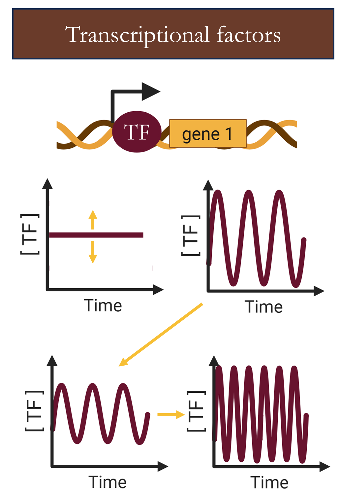
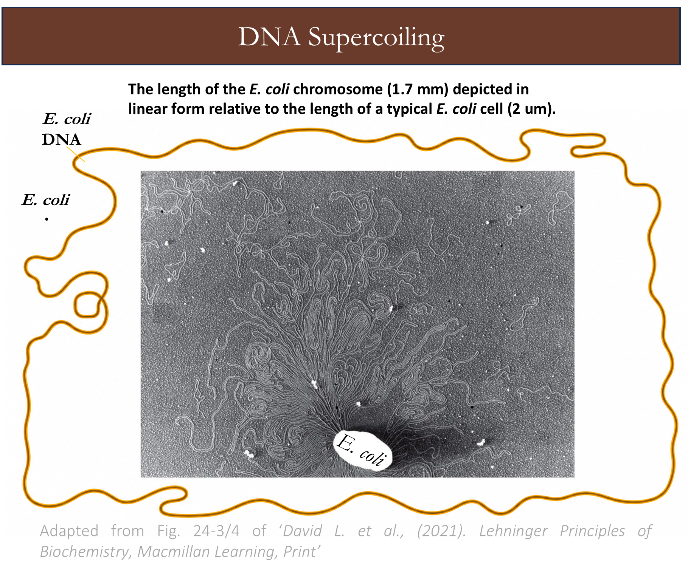
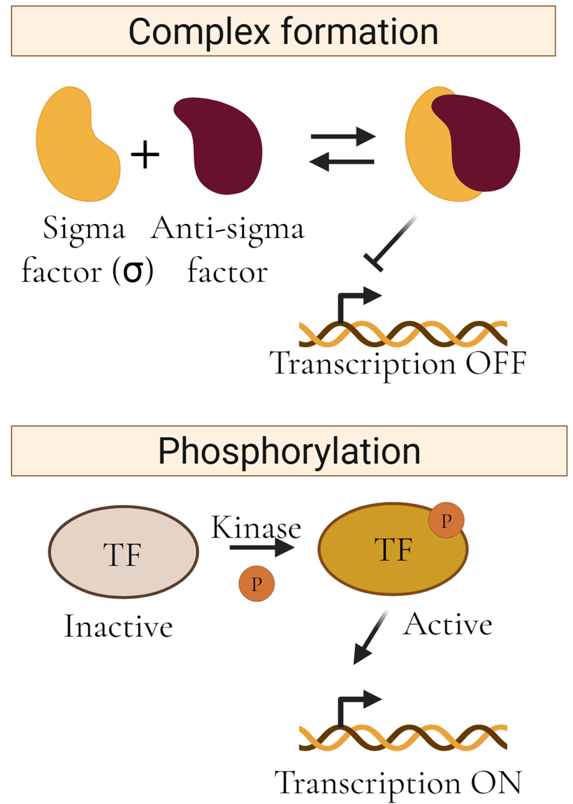
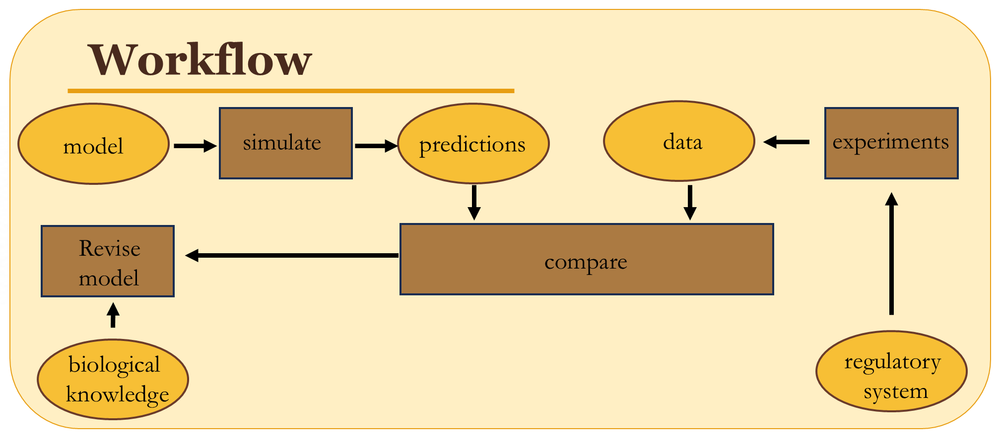

Vision
Map bacterial stress responses to their underlying gene regulatory networks and uncover the signaling rules and regulatory mechanisms that govern when and how each response is triggered.
Stress responses
Gene regulatory networks
Modeling &
synthetic biology
Central question
How do gene regulatory networks (GRNs) translate stress signals into cellular responses?

When bacteria encounter stress, survival depends on their ability to sense environmental changes and appropriately reprogram gene expression. Gene regulatory networks integrate these signals and control the expression of genes that drive specific stress responses and cellular adaptation. The Palma Lab investigates the regulatory mechanisms that determine how GRNs process stress signals and generate adaptive responses.
Regulatory mechanisms we study
Multiple layers. Integrated responses.
01
Transcription factor dynamics
How does the timing of a regulator encode information?
Transcription factor dynamics
How does the timing of a regulator encode information?
Transcription factors (TFs) regulate gene expression and can drive cell-fate decisions by activating or repressing genes associated with alternative cellular states [1,2].
Traditionally, TF regulation has been viewed from a steady-state perspective, in which TF concentration determines the level of activation or repression of its target genes.
However, TF activity can also exhibit complex temporal dynamics, including changes in amplitude, frequency, and duration [3]. These dynamics can encode regulatory information beyond TF concentration alone.
We investigate how GRNs decode dynamic TF signals to control gene expression and cell-fate decisions.

02
DNA supercoiling
How does DNA topology reshape regulatory activity?
DNA supercoiling
How does DNA topology reshape regulatory activity?

DNA supercoiling describes changes in DNA twisting relative to its relaxed state. Overwinding generates positive supercoiling, whereas underwinding generates negative supercoiling [4].
Supercoiling can change both locally and globally. During transcription, RNA polymerase generates negative supercoiling behind it and positive supercoiling ahead of it [5,6]. These local changes in DNA topology can influence transcription of nearby genes.
At the global level, DNA supercoiling also changes when cells encounter different environmental and stress conditions [7].
We investigate how stress-induced changes in DNA supercoiling are integrated into GRNs and ultimately shape cellular responses.
03
Post-translational interactions
How is regulator activity controlled after synthesis?
Post-translational interactions
How is regulator activity controlled after synthesis?
Gene regulatory networks can regulate gene expression not only by controlling the abundance of transcription factors, but also by modulating their activity after they have been produced.
Protein–protein interactions can sequester transcriptional regulators into inactive complexes, as occurs when anti-sigma factors bind sigma factors and prevent transcription.
Alternatively, post-translational modifications such as phosphorylation can switch transcription factors between inactive and active states and thereby control their ability to regulate target genes.
We investigate how these post-translational regulatory mechanisms are integrated within GRNs and how they shape the dynamics of cellular responses.

Our approach
Our research follows an iterative model–experiment cycle. We translate biological knowledge into mathematical models, use these models to generate testable predictions, and experimentally test those predictions using population- and single-cell measurements.
Experimental data are also used to parameterize and refine the models. By iterating between theory, prediction, perturbation, and measurement , we aim to build quantitative and predictive models of gene regulatory networks.

References
- van Sinderen D, Luttinger A, Kong L, Dubnau D, Venema G, Hamoen L. comK encodes the competence transcription factor, the key regulatory protein for competence development in Bacillus subtilis. Mol Microbiol. 1995;15(3):455–462.
- Fujita M, Losick R. Evidence that entry into sporulation in Bacillus subtilis is governed by a gradual increase in the level and activity of the master regulator Spo0A. Genes Dev. 2005;19:2236–2244.
- Palma CS, Haller DJ, Tabor JJ, Igoshin OA. Changes in Spo0A~P pulsing frequency control biofilm matrix deactivation. PLoS Computational Biology. 2025;21(7):e1013263.
- Hustmyer CM, Landick R. Bacterial chromatin proteins, transcription, and DNA topology: inseparable partners in the control of gene expression. Molecular Microbiology. 2024;122(1):81–112.
- Palma C. Repression Mechanisms in Bacterial Transcription. 2022.
- Liu LF, Wang JC. Supercoiling of the DNA template during transcription. Proceedings of the National Academy of Sciences. 1987;84(20):7024–7027.
- Dash S, Palma CS, Baptista IS, Almeida BL, Bahrudeen MN, Chauhan V, et al. Alteration of DNA supercoiling serves as a trigger of short-term cold shock repressed genes of E. coli. Nucleic Acids Research. 2022;50(15):8512–8528.